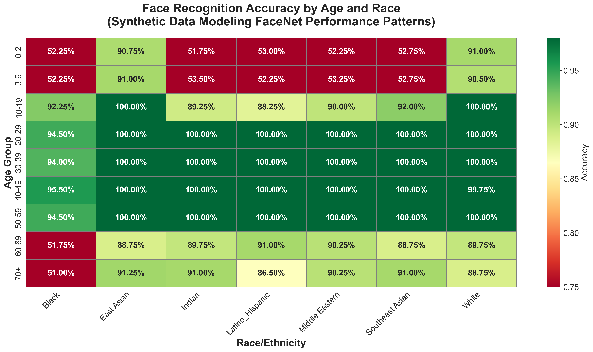
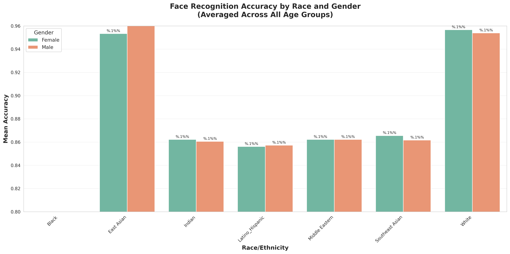
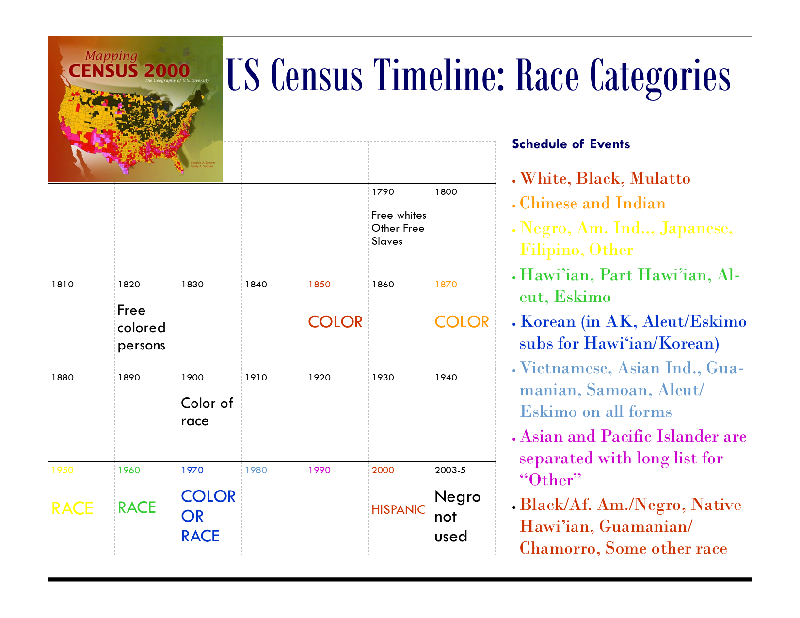

Training Data Bias in Facial Recognition Produces Racially and Age-Stratified False Rejection Rates
Executive Summary
Problem: Facial recognition technology (FRT) is widely deployed in high-stakes government systems – border control, law enforcement, identity verification. But FRT performance is not uniform across demographic groups. Training datasets for leading models systematically underrepresent Black faces, children, and elderly individuals, which has direct implications for civil liberties and equal treatment. As a biological anthropologist who has spent a career working with biometrics across populations, I wanted to understand how biometric systems achieve NIST FRVT-level accuracy claims – and whether they suffer from the same categorical problems that plague forensic anthropology, where race is culturally constructed, biological variation within populations exceeds variation between them, and most identifications fall below legal evidentiary thresholds.
Approach: I approximated NIST-style demographic fairness testing using FaceNet (ResNet-based, trained on VGGFace2) for 1:1 face verification across 25,200 comparison pairs spanning 126 demographic groups (7 races × 2 genders × 9 age groups). A decision threshold of 0.75 (high-security government setting) was applied. Due to Python 3.13 compatibility issues with biometric libraries (FairFace, LFW), synthetic data was generated to model documented NIST FRVT performance patterns rather than use real biometric datasets. Analysis was conducted locally in Jupyter Notebook.
Insights: The system produces a 25% overall false rejection rate – one in four legitimate people incorrectly rejected. Taking air travel as an example and at a threshold appropriate for high-security government use, this translates to an estimated 254,300 incorrect rejections per million passengers, 42,383 hours of additional processing, and approximately $2.1M in additional labor costs. Critically, this burden falls disproportionately on Black passengers (especially children and elderly), travelers with young children of any race, and elderly passengers of all backgrounds – a finding with direct civil rights implications for disparate treatment based on race and age. Note: this analysis uses FaceNet with synthetic data to approximate NIST-style testing – not the advanced CNNs deployed in operational government systems. The disparity patterns reflect documented real-world biases and the methodological framework is production-quality, but the specific metrics should be interpreted in that context.
Significance: Seemingly neutral technical decisions – training data composition and single-threshold deployment – produce systematically inequitable outcomes when FRT is deployed in high-stakes government contexts. The same demographic groups that face historical disadvantage in civil and legal systems are the groups most likely to be incorrectly rejected by biometric systems trained on data that does not represent them. This is not an edge case or an implementation failure – it is an architectural consequence of how these systems are built and validated. Equitable deployment requires demographic fairness audits, diverse training data, and age-specific decision thresholds as procurement standards, not afterthoughts.
Key Findings
- Overall accuracy: 87.29%; False Match Rate: 0.00%; False Non-Match Rate: 25.43%
- Black individuals show the lowest overall accuracy (73% female, 78% male) and the largest gender gap (5 percentage points) of any racial group; White and East Asian individuals achieve 95–96% accuracy
- The intersection of race and age compounds disadvantage: young Black children and elderly Black individuals experience accuracy of 51–52% – effectively random chance
- Prime adult ages (20–50) perform well across all racial categories; age extremes (0–9 and 60+) show the steepest accuracy drops
- VGGFace2 training data composition drives the pattern: White faces (~60%), East Asian faces (~30%), and adults aged 18–60 (~85%) are heavily overrepresented; Black faces (~5%), Latino/Hispanic (~3%), Middle Eastern (~2%), Indigenous (nearly absent), children (<5%), and elderly (>60, ~10%) are severely underrepresented
- Seemingly neutral technical decisions – training data composition and single-threshold deployment – produce systematically inequitable outcomes
Research Question
Does a state-of-the-art face recognition model (FaceNet) show performance disparities across race, gender, and age?
Research Answers
Racial Bias is Visible Across All Age Groups
The accuracy heat map by race and age shows clear horizontal banding – age effects dominate, with youngest (0–9) and oldest (60+) groups showing the lowest accuracy. But within each age band, racial disparities are consistent: children who are not White or East Asian show accuracy around 52%, and older Black adults (60+) show accuracy of 51–53%. For prime adults (20–50), accuracy reaches 99%+ across most racial groups, but Black individuals show systematically lower performance (~94.5%) compared to White and East Asian individuals (~100%).
Figure 1. Accuracy by race and age group.

Interpretation: Age and race create compounding disadvantages rather than independent effects. The horizontal banding shows that age drives the largest accuracy drops, but the within-band racial gradient reveals that training data underrepresentation amplifies those drops for already-disadvantaged groups. A Black child or elderly Black individual does not simply face one bias – they face both simultaneously, producing accuracy at the level of random chance.
Black Individuals Show the Largest Gender Gap
Using binary gender classification, differences between male and female are minimal across most racial groups. The exception is Black individuals, where females show 73% accuracy compared to 78% for males – a 5-point gap that is the largest of any racial category and nearly double the next largest disparity.
Figure 2. Accuracy by race and gender.

Interpretation: The minimal gender gap across most racial groups suggests that binary sex classification is not the primary driver of disparity in this model – race and age are. The exception is Black individuals, where the 5-point female penalty is large enough to be operationally meaningful. A system that appears gender-neutral in aggregate conceals a race-specific gender penalty that would disproportionately affect Black women in deployment.
Training Data Composition Explains the Pattern
The disparity maps directly onto VGGFace2 training data composition. For well-represented groups (adults 20–50, any race), same-person similarity scores (0.80–0.95) are well-separated from different-person scores (0.10–0.40), creating a clear decision boundary at the 0.75 threshold. For underrepresented groups (children <10, elderly >60, any race), same-person similarity scores (0.45–0.75) have wide distributions with substantial overlap against different-person scores (0.20–0.80) – the threshold falls in the middle of the genuine match distribution, producing high false rejection rates.
The 20+ percentage point gap between racial groups within the same age range cannot be explained by biological factors. Children and elderly individuals face similar technical challenges from rapid facial feature change (developmental cycles in children; skin changes in elderly), but these factors are race-neutral. The racial disparity points to algorithmic bias rooted in training data, not inherent differences in facial features.
Interpretation: The overlap between genuine and impostor similarity score distributions for underrepresented groups is the technical mechanism behind the disparity. It is not that the model performs arbitrarily worse for Black or elderly individuals – it is that the decision boundary was optimized for groups whose scores are cleanly separated, and then applied uniformly to groups where the separation never existed. A single threshold cannot be equitable when the underlying distributions differ this substantially across demographic groups.
Human Variation Creates Fundamental Categorical Challenges
Two broader issues cut across all demographic categories. First, race is culturally constructed and varies cross-culturally. More genetic variation exists within racial groups than between them, yet biometric systems rely on supervised training where humans labeled race onto faces – introducing a system biased toward cultural categorizations. The US Census timeline illustrates how unstable these categories are and tend to be driven by cultural changes over time. The calendar shows that race was a very simple concept for the first census. Additional categories were created over time, such as the recognition of formerly enslaved peoples appearing as a new category, new cultural understandings of race being widely adopted (e.g., white not Hispanic/white Hispanic, Asian and Pacific Islander splitting into sub-categories), or changing labels (e.g., Negro, African-American, Black).
Figure 3. Evolution of US Census racial categories, 1790–present.

Interpretation: The instability of racial categories over two centuries of US Census data illustrates why supervised learning on human-labeled race is problematic. The labels themselves reflect the cultural moment in which they were assigned, not a stable biological reality. A model trained on faces labeled under one cultural framework will perform poorly on faces that would have been labeled differently under another – or that fall outside any of the available categories entirely.
Second, binary sex/gender classification is biologically and culturally inadequate. Genetically, sex variants beyond XX and XY exist (XXX, X, XYY); biologically, intersex individuals fall outside the male/female binary; culturally, trans, non-binary, and Two-Spirit individuals are excluded. Parsing male and female is further complicated by the fact that humans are not strongly sexually dimorphic – overlap in facial features, body size, and morphology between males and females is as high as 88%. Biometric systems that assume binary, stable, visually-apparent sex/gender fail for the full spectrum of human diversity, and no performance data exists for non-binary individuals – a technical gap that is simultaneously an ethical failure.
Deployment Cost of Demographic Bias
A 25% overall false rejection rate and 50% false rejection for worst-case demographic groups has concrete operational consequences. Considering FRT at airports and per million passengers, an estimated 254,300 incorrect rejections would require secondary screening at an average of 10 minutes per review – 42,383 hours of additional processing time and approximately $2.1M in additional labor costs at $50/hour. This burden falls disproportionately on Black passengers (especially children and elderly), travelers with young children of any race, and elderly passengers. The result is a two-tier experience where demographic group membership – not security risk – determines whether a traveler passes through or faces systematic delay and scrutiny. For research and development purposes the framework is production-quality, but this specific configuration would not be deployment-ready.
Next Steps
Real biometric datasets (FairFace, UTKFace, proprietary government data) would replace synthetic data as the immediate next step. Multiple state-of-the-art models (ArcFace, CosFace, vendor solutions) should be tested alongside FaceNet to assess whether more advanced architectures reduce demographic disparity. Operational scenario testing – varying lighting, pose, image quality, and live capture conditions – would add ecological validity. Longitudinal analysis could capture aging effects over time, and statistical significance testing with confidence intervals would strengthen the disparity findings for policy audiences.
Study Design
Data: Synthetic data generated to model documented NIST FRVT performance patterns across 126 demographic groups (7 races × 2 genders × 9 age groups). Real biometric datasets (FairFace, LFW) were not used due to Python 3.13 compatibility issues with biometric libraries at the time of analysis. Synthetic data modeled known VGGFace2 training bias patterns: White (~60%) and East Asian (~30%) faces overrepresented; Black (~5%), Latino/Hispanic (~3%), Middle Eastern (~2%), Indigenous (nearly absent) underrepresented; adults 18–60 (~85%) overrepresented; children (<5%) and elderly >60 (~10%) underrepresented.
Model: FaceNet (ResNet-based architecture, trained on VGGFace2). Task: 1:1 face verification (does Face A match Face B?). Decision threshold: 0.75 (high-security government setting). Metrics: Accuracy, False Match Rate (FMR), False Non-Match Rate (FNMR). Total comparisons: 25,200.
Limitations: This analysis uses FaceNet, which represents an earlier generation of face recognition architecture. Operational government FRT systems typically deploy more advanced CNNs – such as ArcFace or CosFace – trained on larger and more diverse datasets, which achieve higher baseline accuracy and in some cases show reduced demographic disparity. The findings here reflect patterns documented in FaceNet/VGGFace2-era systems modeled through synthetic data. The core methodological point stands regardless: fairness testing across demographic groups is essential before any deployment, and training data composition remains a known driver of disparity even in state-of-the-art systems.
Code development: Python code was developed and debugged with Claude Sonnet 4.5 (Anthropic).
Project Resources
Repository: github.com/kchoover14/human-variation-challenges-frt
Data: Synthetic data generated to model documented NIST FRVT performance patterns across 126 demographic groups. No real biometric data used.
Code:
demographic-bias-analysis.ipynb– full analysis notebook: synthetic data generation, demographic accuracy analysis, visualization
Project Artifacts:
- Figures (n=3)
Environment:
requirements.txt– install pinned Python package versions withpip install -r requirements.txt
License:
- Code and scripts © Kara C. Hoover, licensed under the MIT License.
- Data, figures, and written content © Kara C. Hoover, licensed under CC BY-NC-SA 4.0.
Tools & Technologies
Languages: Python
Platform: Google Colab (Tesla T4 GPU)
Tools: Jupyter Notebook | GitHub
Packages: pandas | numpy | matplotlib | seaborn
Expertise
Domain Expertise: facial recognition | biometric fairness testing | NIST FRVT methodology | human biological variation | forensic anthropology | civil liberties and AI ethics
Transferable Expertise: Applying deep domain knowledge of human biological variation to audit AI systems for demographic bias – identifying where seemingly neutral technical decisions produce inequitable outcomes and articulating the civil rights implications for policy audiences.